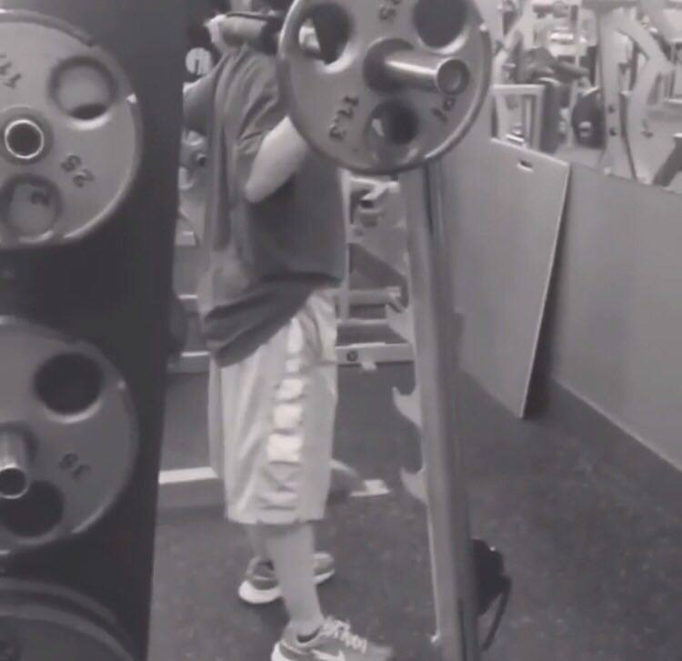

Barbell Squats
The proper way to a healthy lifestyle
11 September 2017
The La Suinte is the perfect place to begin a healthy and safe lifestyle. It is extremely important to learn how to properly do a barbell squat otherwise you can get seriously injured. As well as learning the way to properly do a barbell squat, you will learn ways to eat healthier and why eating healthy can impact your life dramatically. The instructions are easy to understand and should be used correctly. The equipment and supplies I have stated need to be followed exactly. Some people may find it unnecessary to stretch or do meal preps in advance, I assure you it is a key factor to a healthier lifestyle. Safety is the number one factor throughout the websites information.
Instructions
- Make sure the bar is low enough for you to take off the pegs and find your hand position (Before getting under the bar).
- Beginners should use the high-bar position. It is set up at the base of your neck across the top of your traps.
- Squeeze your shoulder blades together to create a pillow for the bar to sit on.
- Keep chest up and elbows down.
- Squat up to unrack the bar.
- Take one step back with one leg and then the other.
- squat down making a 90 degree angle with your legs.
- come back up to standing position.
- repeat 25-30 times.
Required Equipment
- Sneakers
- Water
- Barbell
Tips
- Healthy eating is 90 percent of the work, 10 percent working out.